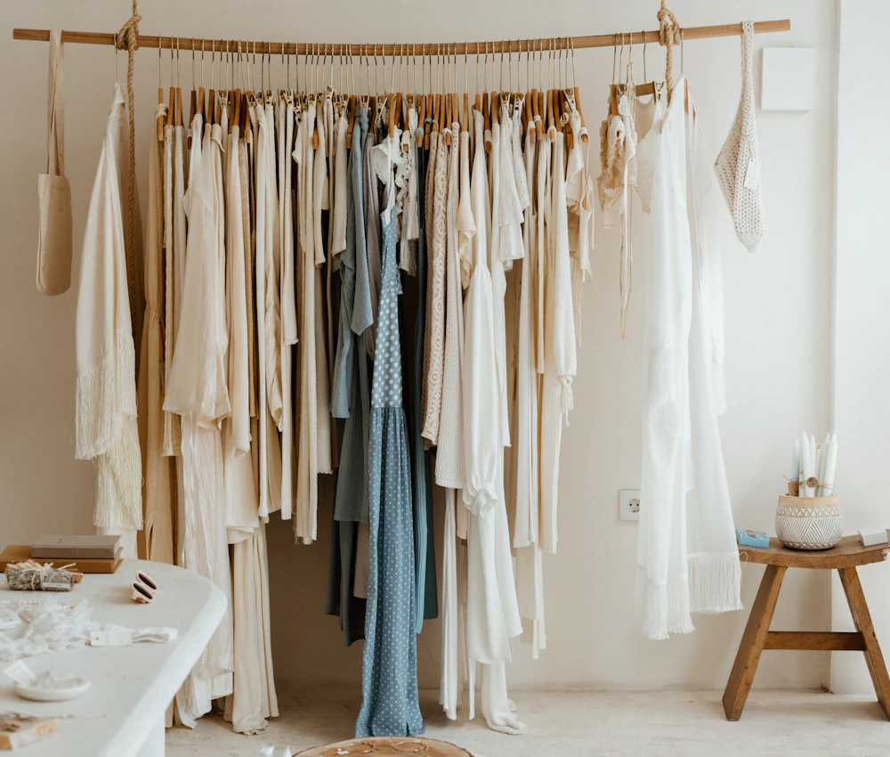
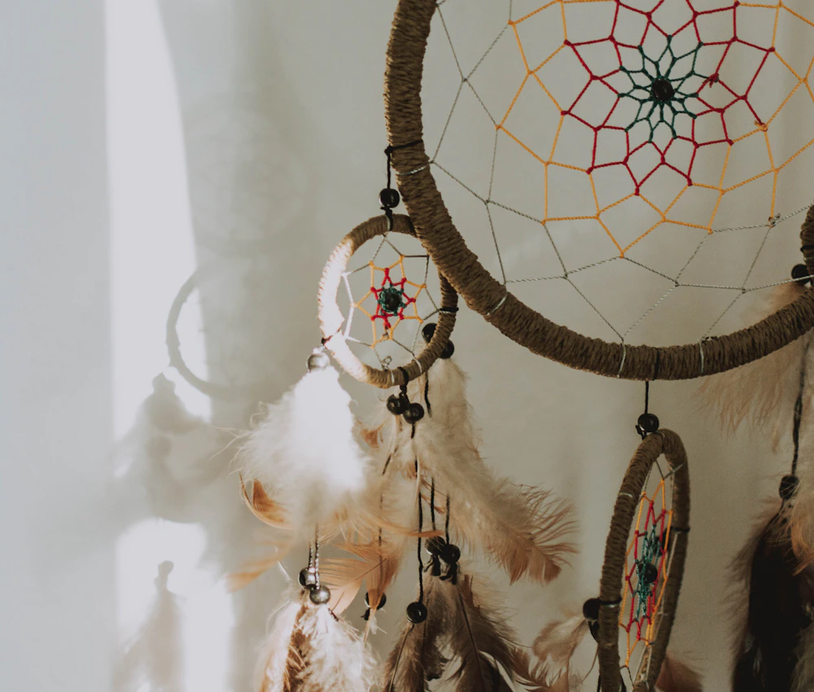

01 / FASHION
Clothes
with character
Stylish dresses, cool denim jackets and more pieces for a wardrobe with personality.
A Khar West original
Looking for stylish clothes and accessories with a quirky touch? Explore dresses, denim jackets, handbags, earrings, hats and eyewear, then find a little something playful for your space.
Come say helloFuss Pot is a fashion and home décor boutique in Khar, Mumbai, for people who like their finds with a little personality. Come browse for stylish dresses, cool denim jackets and accessories that add a quirky touch to your look.
There are handbags, earrings, hats and eyewear to explore, plus home décor favourites such as dreamcatchers, wall hangings and adorable showpieces. The collection changes, so there’s always something new to discover.
See what’s new on Instagram
Stylish dresses, cool denim jackets and more pieces for a wardrobe with personality.
Handbags, earrings, hats and eyewear to add a quirky touch to your look.

Dreamcatchers, wall hangings and adorable showpieces for your favourite corners.
The selection changes regularly. For current availability, message Fuss Pot on Instagram.
Your next little discovery
Come browse in person at our Khar West boutique. We’d love to see you.
Shop 3 & 4, Radha SadanFind us on the map
Daily, 11:00 am – 9:30 pmListed hours can change. Check before you travel.
+91 98190 85507For the latest store information.
@fuss_pot on Instagram ↗Updates, new finds and queries.
Make room for a detour
Maybe it’s the denim jacket, the perfect pair of earrings, or a dreamcatcher that brightens your wall. Fuss Pot is full of little finds that give your style and space a more personal feel.
See the latest findsLOOKS THAT FEEL
MORE LIKE YOU
Keep it curious.
@fuss_pot